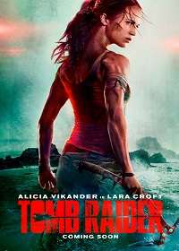
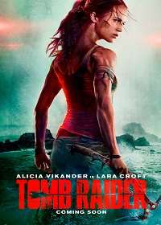
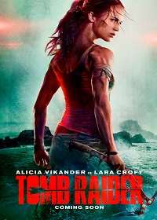
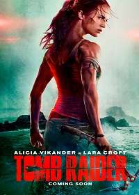

CINE COLOMBIA
 

Tras la desaparición de su padre Richard, Lara Croft vive una vida imprudente y despreocupada. Cuando la arrestan después de un accidente que involucra un automóvil de la policía, la socia de negocios de Richard, Ana Miller, deposita su fianza y le advierte que si no reclama su herencia, se liquidarán los bienes de su padre. Lara acepta a regañadientes y toma posesión de la llave de la oficina de su padre. Allí encuentra un mensaje pregrabado de Richard que detalla su investigación sobre Himiko, la mítica Reina de Yamatai de quien se dice que domina el poder sobre la vida y la muerte. Richard advierte a Lara que destruya toda su investigación, pero Lara decide investigar más.